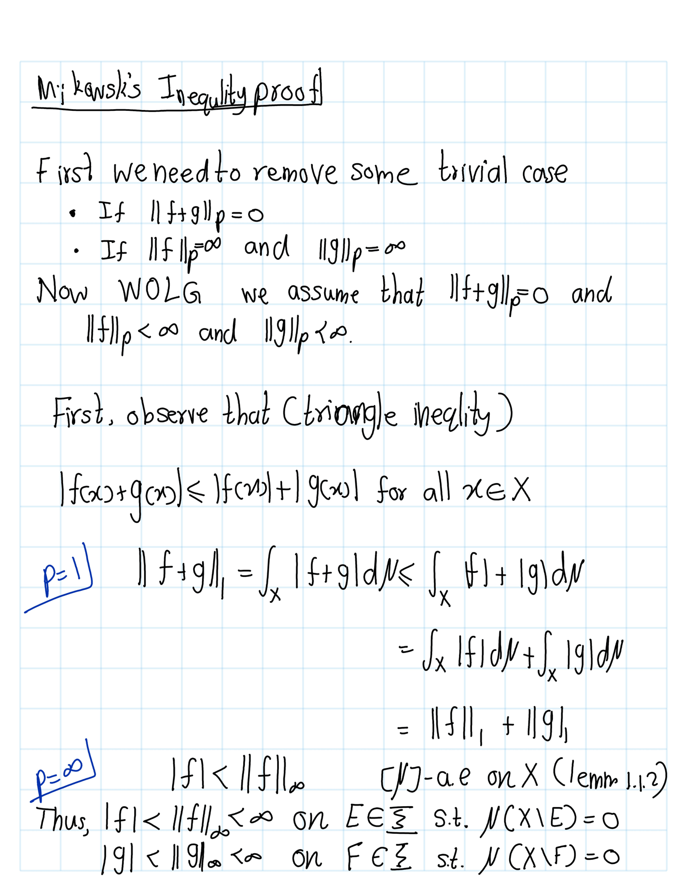
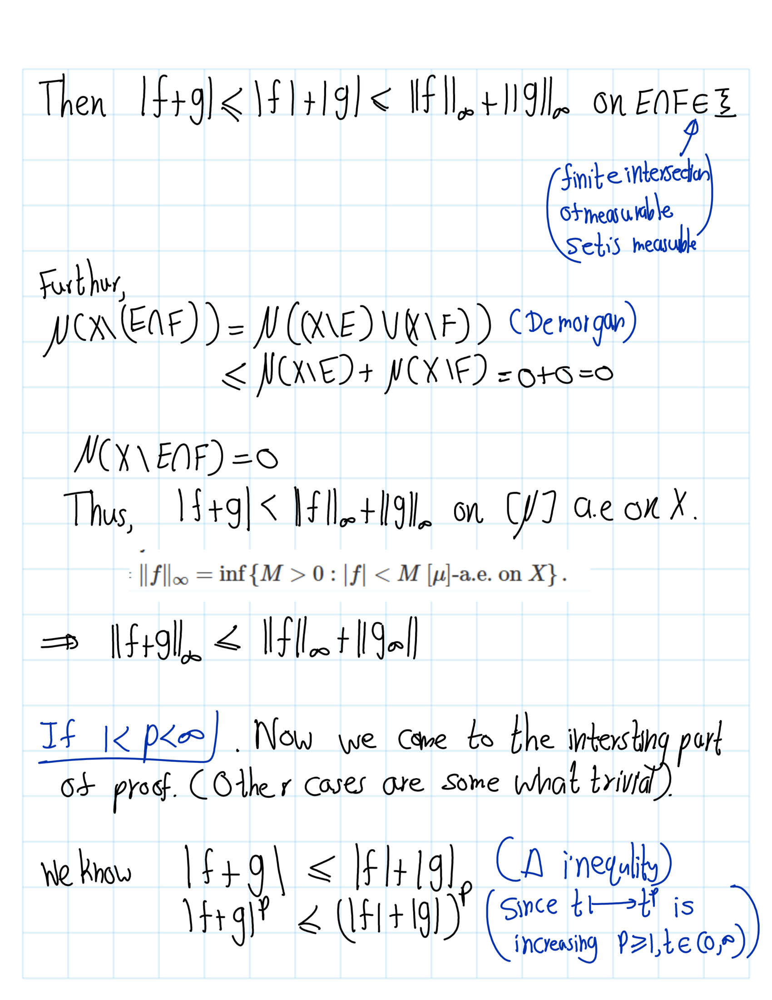
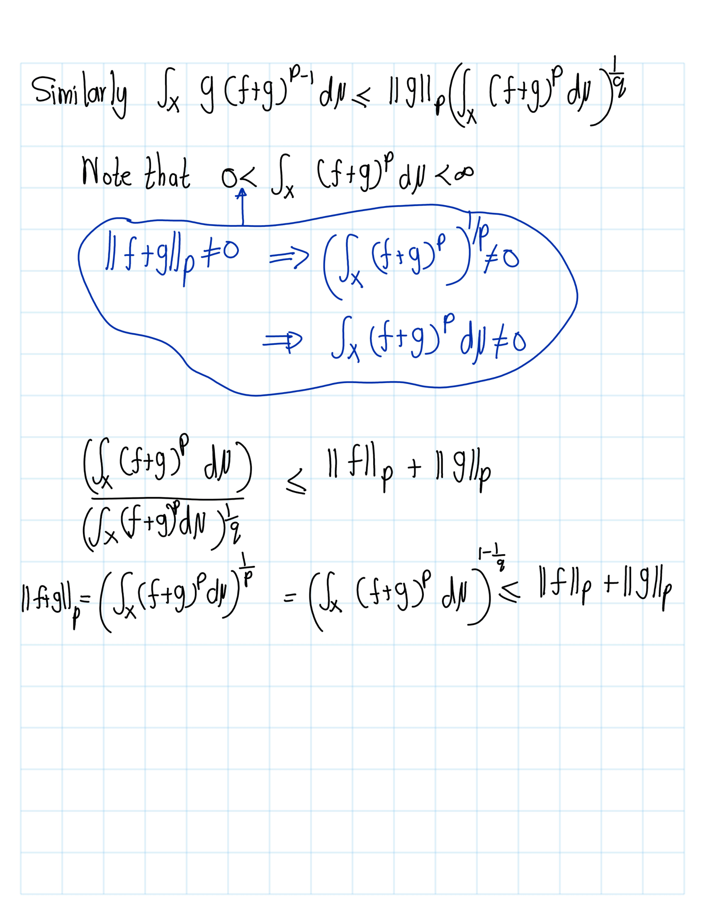
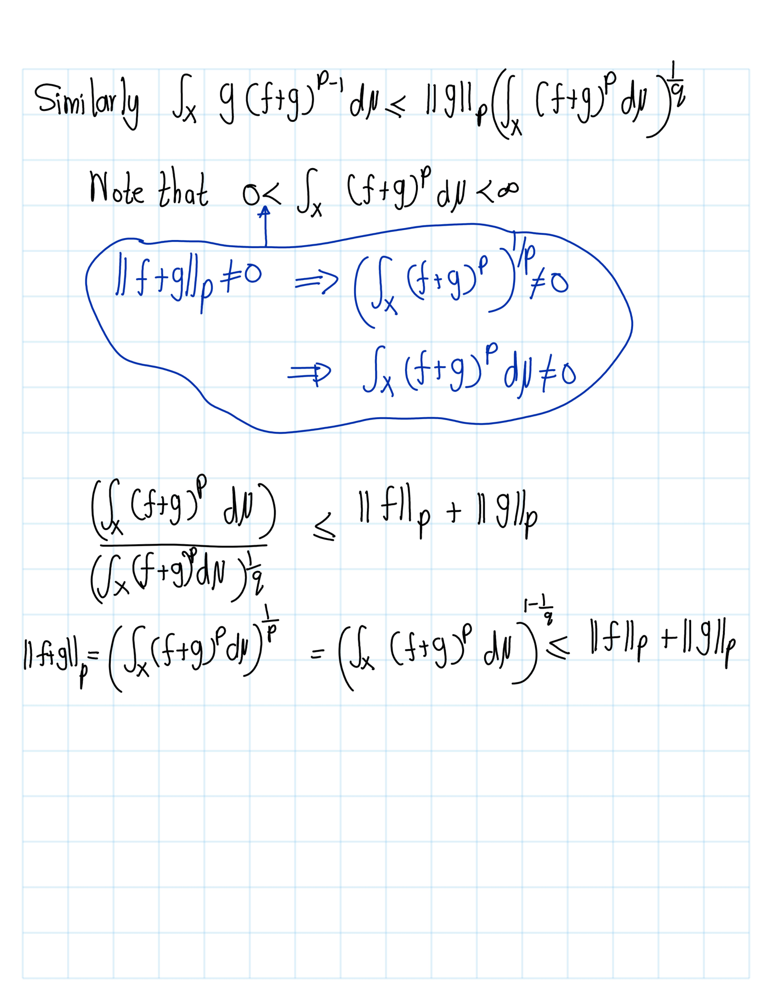

Functinal Analaysis
2026-01-15
Chapter 1 Banach space
1.1 Lebesgue spaces
1.1.1 a
Definition 1.1 markdown Let \(X\) be a set. A \(\sigma\)-algebra \(\mathcal{I}\) on \(X\) is a collection of subsets of \(X\) such that:
- \(\emptyset \in \mathcal{I}\),
- if \(E \in \mathcal{I}\), then \(X \setminus E \in \mathcal{I}\),
- if \(E_n \in \mathcal{I}\) for every \(n \ge 1\), then
\[ \bigcup_{n=1}^{\infty} E_n \in \mathcal{I}. \]
- Elements of \(\mathcal{I}\) are called \(\mathcal{I}\)-measurable sets,
- \((X,\mathcal{I})\) is a measurable space.
Definition 1.2 A function \(f : X \to \mathbb{C}\) is said to be measurable if \[ f^{-1}\bigl(\{\, z \in \mathbb{C} : |z - a| < \delta \,\}\bigr) \in \mathcal{T}\] for every \(\delta > 0\) and \(a \in \mathbb{C}\).
Definition 1.3 A (positive) measure is a function
\[ \mu : \mathcal{T} \to [0,\infty] \]
which is countably additive, in the sense that if \(\{E_n\}_{n=1}^\infty\) is a countable collection of disjoint measurable sets, then
\[ \mu\!\left( \bigcup_{n=1}^{\infty} E_n \right) = \sum_{n=1}^{\infty} \mu(E_n). \]
- The triple \((X, \mathcal{T}, \mu)\) is called a .
Notation :
- Let \(0 < p < \infty\),
\[\mathcal{L}^p(X,\mathcal{I},\mu):=\left\{f:X\rightarrow \mathcal{C}:f \text{ is measurable and }\int_X |f|^p d\mu<\infty\right\}\]
- Such functions are said to be \(p\)-integrable.
- \(\mathcal{L}^p\) norm of \(f\) \(= ||f||_p=\left(\int_X|f|^p\, d\mu\right)^\frac{1}{p}\)
- \(p=\infty\)
\[ \mathcal{L}^{\infty}(X,\mathcal{T},\mu) = \left\{ f : X \to \mathbb{C} \;:\; \exists\, M > 0 \text{ such that } |f| < M \ \text{[\(\mu\)]-a.e. on } X \right\}. \]
- Such functions are said to be essentially bounded.
- The essential norm \(=\) \(\mathcal{L}^{\infty}\) norm of \(f=
\|f\|_{\infty}
= \inf \left\{ M > 0 : |f| < M \ \text{[\(\mu\)]-a.e. on } X \right\}.\)
.png) In this section we use the term “norm.” Strictly speaking, we have not yet verified that the expressions introduced actually satisfy the axioms of a norm. That verification will come later. For now, we use the word “norm” informally, with the understanding that its legitimacy will be established in due course.
In this section we use the term “norm.” Strictly speaking, we have not yet verified that the expressions introduced actually satisfy the axioms of a norm. That verification will come later. For now, we use the word “norm” informally, with the understanding that its legitimacy will be established in due course.
(#lem:lemma1.1.1) Let \((X,\mathcal{T},\mu)\) be a measure space, let \(0 < p < \infty\), and let \(f \in \mathcal{L}^{p}(X,\mathcal{T},\mu)\). Then
\[ \|f\|_{p} = 0 \quad \iff \quad f(x) = 0 \ \text{for [\(\mu\)]-a.e. } x \in X. \]
Proof. .png)
.png)
Fact: \(\lambda \in \mathbb{C}, f\in \mathcal{L}^p(X,I,\mu), 0<p\geq\infty,||\lambda f||_p=|\lambda| ||f||_p\).
Proof. .png)
Lemma 1.1 Let \((X,\mathcal{T},\mu)\) be a measure space and let \(f \in \mathcal{L}^{\infty}(X,\mathcal{T},\mu)\). Then, for \[ |f(x)| \le \|f\|_{\infty} [\mu]-\text{a.e.} x \in X. \]
.png)
Result : If \(f,g\in \mathcal{L}^P(X,I,\mu)\) then \(f+g\in \mathcal{L}^P(X,I,\mu)\)
| \(1\leq p <\infty\) | \(p=\infty\) |
|---|---|
.png) |
.png) |
Lemma 1.2 (Young's inequality) Let \(a,b \ge 0\) and \(1 < p < \infty\). Let \(q\) be the conjugate exponent, i.e.
\(\frac{1}{p} + \frac{1}{q} = 1.\)
Then
\[ ab \le \frac{a^{p}}{p} + \frac{b^{q}}{q}. \]
.png)
.png)
Theorem 1.1 (Holder's inequality) Fix \(1 \le p < \infty\) and let \(q\) be the conjugate exponent, i.e.
\(\frac{1}{p} + \frac{1}{q} = 1.\)
Let \(f,g : X \to \mathbb{C}\) be measurable functions. Then
\[ \int_X |f g| \, d\mu \;\le\; \left( \int_X |f|^{p} \, d\mu \right)^{1/p} \left( \int_X |g|^{q} \, d\mu \right)^{1/q}=||f||_p ||f||_q. \]
Proof. .png)
.png)
Remark. If \(p=2\) then \(q=2\) then Holder ineqaulty becomes Cauchy -Schawrz inequlity.
Theorem 1.2 (Minkowski's Inequality) Fix \(1 \le p \le \infty\). Let \(f,g : X \to \mathbb{C}\) be measurable functions. Then \[ \|f + g\|_{p} \le \|f\|_{p} + \|g\|_{p}. \]
Proof. 

 

Next, we consider the following question:
Question : For which measurable functions \(f : X \to \mathbb{C}\) do we have \(\|f\|_{p} = 0\)?
Answer: By lemma @ref(lemm:lemma1.1.1) \(||f||_p=0 \iff f=0 ~[\mu] -\) a.e. Precisely those functions such that \(f(x) = 0\) for \(\mu\)-almost every \(x \in X\).
In particular, there are some functions \(f\) which are not identically zero but have zero \(\mathcal{L}^{p}\)-norm. This is unfortunate, so we typically consider the following quotient space:
We define
\[ {L}^{p}(X,\mathcal{T},\mu) = \frac{\mathcal{L}^{p}(X,\mathcal{T},\mu)}{N_{p}}, \]
where
\[ N_{p} = \{\, f \in \mathcal{L}^{p}(X,\mathcal{T},\mu) : \|f\|_{p} = 0 \,\}. \]
We have seen that for any \(\lambda \in \mathbb{C}\) and any \(f, g \in \mathcal{L}^{p}(X,\mathcal{T},\mu)\), we always have
\[\begin{align*} \|\lambda f\|_{p} &= |\lambda|\,\|f\|_{p},\\ \|f + g\|_{p} &\le \|f\|_{p} + \|g\|_{p}.\\ & \uparrow\\ &\text{ By Mink}\\ \end{align*}\]
Claim: \(\mathcal{L}^p\) is vector space over \(\mathbb{C}\).
Proof.
- Zero function
Let \(0(x) := 0\) for all \(x\). Then \(|0|^p = 0\) and \(\int_X |0|^p\,d\mu = 0 < \infty,\) so \(0 \in \mathcal{L}^p\).
- Closed under scalar multiplication
Let \(f \in \mathcal{L}^p\) and \(\lambda \in \mathbb{C}\). Then \[ |\lambda f|^p = |\lambda|^p |f|^p, \] so \[ \int_X |\lambda f|^p\,d\mu = |\lambda|^p \int_X |f|^p\,d\mu < \infty. \] Thus \(\lambda f \in \mathcal{L}^p\).
- Closed under addition
Let \(f,g \in \mathcal{L}^p\). Use the standard inequality for \(p \ge 1\): \[ |f+g|^p \le 2^{p-1}\big(|f|^p + |g|^p\big). \] Integrate: \[ \int_X |f+g|^p\,d\mu \le 2^{p-1} \left( \int_X |f|^p\,d\mu + \int_X |g|^p\,d\mu \right) < \infty, \] since both integrals on the right are finite. Hence \(f+g \in \mathcal{L}^p\).
- Vector space axioms
The pointwise operations \[ (f+g)(x) := f(x)+g(x), \quad (\lambda f)(x) := \lambda f(x) \] inherit associativity, commutativity, distributivity, etc., from \(\mathbb{C}\). Together with steps 1–3, this shows \(\mathcal{L}^p(X,\mathcal{T},\mu)\) is a vector space over \(\mathbb{C}\).
Then \[ L^{p}(X,\mathcal{T},\mu) = \frac{\mathcal{L}^{p}(X,\mathcal{T},\mu)}{N_{p}} \] is the quotient of this vector space by the subspace \(N_p\), so it is also a vector space.
Claim: \(N^p\) is subspace of \(\mathcal{L}^p\)
Proof. Let \(f,g\in N^p\) and \(\lambda\in \mathbb{C}\),
- \(0_{map}\in N^p\implies N^p \neq \emptyset\)
- \(\|\lambda f\|_{p} = |\lambda|\,\|f\|_{p}=0\)
- \(\|f + g\|_{p} \le \|f\|_{p} + \|g\|_{p}=0 \implies \|f + g\|_{p}=0.\)
Thus, \(N^p\) is a subspace of \(\mathcal{L}^p\).
Thus, \(L^p\) is subspace. Hence, \(N_{p}\) is a subspace of \(L^{p}(X,\mathcal{T},\mu)\); therefore \(L^{p}(X,\mathcal{T},\mu)\) is a vector space over \(\mathbb{C}\).
If for \(f \in L^{p}(X,\mathcal{T},\mu)\) we denote by \([f]\) its image in the quotient space \(L^{p}(X,\mathcal{T},\mu)\), then
\[ \lambda [f] + [g] = [\,\lambda f + g\,]. \]
Define \[\|[f]\|_p=\|f\|_p\] More ever, \(\|[\cdot]\|_p\) well defined.
Proof. Let \(f,g\in \mathcal{L}^p\) By Minkowski’s inequlirty we can get,
\[\begin{equation} \bigl|\,\|f\|_{p} - \|g\|_{p}\,\bigr| \;\le\; \|\,f - g\,\|_{p}, \qquad f,g \in L^{p}(X,\mathcal{T},\mu). \end{equation}\]
Suppos that \([f]=[g]\). Then, \(f-g\in N^p\implies f-g\in N^p\). Then \(\|\,f - g\,\|_{p}=0\). Thus,
\[\begin{align*}\bigl|\,\|f\|_{p} - \|g\|_{p}\,\bigr| \;\le\; \|\,f - g\,\|_{p}=0 & \implies \|[f-g] \|_p=0\\ &\implies \bigl|\,\|f\|_{p} - \|g\|_{p}\,\bigr|=0\\ &\implies \,\|f\|_{p} = \|g\|_{p} \end{align*}\]
Note that \(\|[f]\|_p = 0\) if and only \([f] = 0_{L^p}\) in \(L^p(X,I,\mu)\).
Proof.
- \(\mathbf{\implies}\) :
\[\begin{align*} \|[f]\|_p = 0 &\implies \|f\|_p = 0.\\ &\implies f\in N^p \\ & \implies [f] = [0] = 0_{L^p}\\ \end{align*}\] - \(\mathbf{\Longleftarrow}\) : \[\begin{align*} [f]=0_{L^p} & \implies [f]=[0]\\ & \implies f-0\in N^p\\ & \implies f\in N^p \\ & \implies \|f\|_p=0\\ & \implies \|[f]\|_p = \|f\|_p = 0. \end{align*}\]
Now we can avoid the problem that have earlier. Now we can defnie the norm.
Here’s a clean, well‑structured Markdown version of your text, with mathematical expressions formatted clearly and consistently.
1.2 A point of notation
For convenience, mathematicians agree to write \(f\) instead of \([f]\). This causes very little confusion; the only thing to keep in mind is that one can capture the behaviour of an element in \(L^p(X,\mathcal{T},\mu)\) only up to sets of zero \(\mu\)-measure. For the rest of this course, we will use this convention and write elements of the quotient space \(L^p\) simply as functions.
1.2.1 Summary
For \(1 \le p \le \infty\):
Vector space: \(L^p(X,\mathcal{T},\mu)\) is a vector space over \(\mathbb{C}\).
Definition of the \(p\)-norm: To every \(f \in L^p(X,\mathcal{T},\mu)\) we associate a non‑negative number defined by
\[ \|f\|_p = \left( \int_X |f|^p \, d\mu \right)^{1/p}, \qquad 1 \le p < \infty, \] and for \(p = \infty\), \[ \|f\|_\infty = \inf\{ M \ge 0 : |f(x)| \le M \text{ for almost every } x \}. \]Homogeneity: For every \(\lambda \in \mathbb{C}\) and \(f \in L^p(X,\mathcal{T},\mu)\), \[ \|\lambda f\|_p = |\lambda|\, \|f\|_p. \]
Triangle inequality: For every \(f,g \in L^p(X,\mathcal{T},\mu)\), \[ \|f + g\|_p \le \|f\|_p + \|g\|_p. \]
Definiteness: For every \(f \in L^p(X,\mathcal{T},\mu)\), \[ \|f\|_p \ge 0, \] with equality if and only if \(f = 0\) almost everywhere.
Properties (iii), (iv), and (v) show that \(\|\cdot\|_p\) defines a norm, so \(L^p(X,\mathcal{I},\mu)\) is a normed linear space.
Definition 1.4 Banach spaces are normed linear spaces with an additional property: they are complete, meaning every Cauchy sequence converges.
Our next task is to show that \(L^p(X,\mathcal{I},\mu)\) is a Bannch space. (We need to show that complete space)
Before doing so, we recall some important results from measure theory.
Lemma 1.3 (Chebyshev’s Inequality) Let \((X,\mathcal{T},\mu)\) be a measure space and let \(f\) be a non‑negative measurable function on \(X\).
Then, for every \(\lambda > 0\),
\[
\mu\{x \in X : f(x) \ge \lambda\}
\;\le\;
\frac{1}{\lambda} \int_X f \, d\mu.
\]
Proof. Let \(E_\lambda=\{x \in X : f(x) \ge \lambda\}\), Then, \[ \int_X f \,d\mu \geq \int_{E_\lambda} f \,d\mu \ge \int_{E_\lambda} \lambda \,d\mu =\lambda \int_{E_\lambda} \,d\mu =\lambda \mu(E_\lambda) \]
Lemma 1.4 (Borel–Cantelli Lemma) Let \((X,\mathcal{T},\mu)\) be a measure space and let \(\{E_n\}_{n=1}^\infty\) be a collection of measurable sets such that \(\sum_{n=1}^\infty \mu(E_n) < \infty.\) Then \(\mu\)-almost every \(x \in X\) belongs to at most finitely many of the sets \(E_n\).
Proof. \[\begin{align*} S&:=\left\{x\in X: x \text{ belongs to infinitly many }E_n\right\}\\ &=\bigcap_{N=1}^\infty \bigcup_{k=N}^\infty E_k (See latter picture.) \end{align*}\]
\[\begin{align*} \mu(S) &\le \mu \left(\cup_{k=N}^\infty\right)\\ & \le \sum_{k=N}^\infty \mu(E_k) \text{ for all } N \end{align*}\] Then left hand side is goes to zero as \(N\to \infty\).
.png)
Lemma 1.5 (Fatou’s Lemma) Let \((X,\mathcal{T},\mu)\) be a measure space and let \(\{f_n\}_{n=1}^\infty\) be a sequence of non‑negative measurable functions on \(X\). Then, \[ \int_X \liminf_{n\to\infty} f_n \, d\mu \;\le\; \liminf_{n\to\infty} \int_X f_n \, d\mu. \]
Lemma 1.6 Let \((X,\mathcal{T},\mu)\) be a measure space and let \(1 \le p \le \infty\). Let \(\{f_n\}_{n=1}^\infty \subset L^p(X,\mathcal{T},\mu)\) be a sequence such that there exists a sequence of positive numbers \(\{\varepsilon_n\}_{n=1}^\infty\) with \[\sum_{n=1}^\infty \varepsilon_n < \infty, \text{ and } \|f_n - f_{n+1}\|_p \le \varepsilon_n^2, \qquad n \ge 1. \]
Then there exists \(f \in L^p(X,\mathcal{T},\mu)\) such that
pointwise a.e. convergence: \[ \lim_{n\to\infty} f_n(x) = f(x) \quad \text{for } \mu\text{-almost every } x \in X, \]
convergence in \(L^p\): \[ \lim_{n\to\infty} \|f - f_n\|_p = 0. \]
Proof.
: \((f_n)\) is cauchy.
For \(n,m \ge 1\), consider follwing \[\begin{align*} \| f_n-f_{n+m}\| &=\|f_n-f_{n+1}+f_{n+1}+\cdots +f_{n+m-1}-f_{n+m}\|\\ &=\|f_n-f_{n+1}\|+\|f_{n+1}-f_{n+2}\|+\cdots +\|f_{n+m-1}-f_{n+m}\|\\ &\ge \sum_{k=n}^{n+m-1} \|f_k-f_{k+1}\|\\ & \ge \sum_{k=n}^{n+m-1} \epsilon_k^2 \end{align*}\] Then left hand side is goes to zero as \(n \to 0\). Thus, \((f_n)\) is cauchy.
:
- \(p=\infty\): For \(n,m \ge 1\) then we have , \[\|f_n(x) − f_m(x)\| \le \|f_n −f_m\|_\infty \text{ for }[µ]\text{ -almost every} x \in X. \] Hence, there is a measurable set \(E_{n,m} \subset X\) such that \[\mu(X \setminus E_{n,m}) = 0 \text{ and } |f_n(x) - f_m(x)| \le \|f_n - f_m\|_\infty \quad \text{for every } x \in E_{n,m}. \]
Then the set \(E = \bigcap_{n,m} E_{n,m}\) is measurable and satisfies \(\mu(X \setminus E) = 0,\) and moreover,
\[ |f_n(x) - f_m(x)| \le \|f_n - f_m\|_\infty \quad \text{for every } x \in E \text{ and every } n,m \in \mathbb{N}. \]
Thus, for every \(x \in E\), the sequence \(\{f_n(x)\}_n \subset \mathbb{C}\) is Cauchy.
Since \(\mathbb{C}\) is complete, we may define a measurable function \(f : X \to \mathbb{C}\) by
\[ f(x) = \lim_{n \to \infty} f_n(x), \qquad x \in E. \]
- \(p<\infty\)